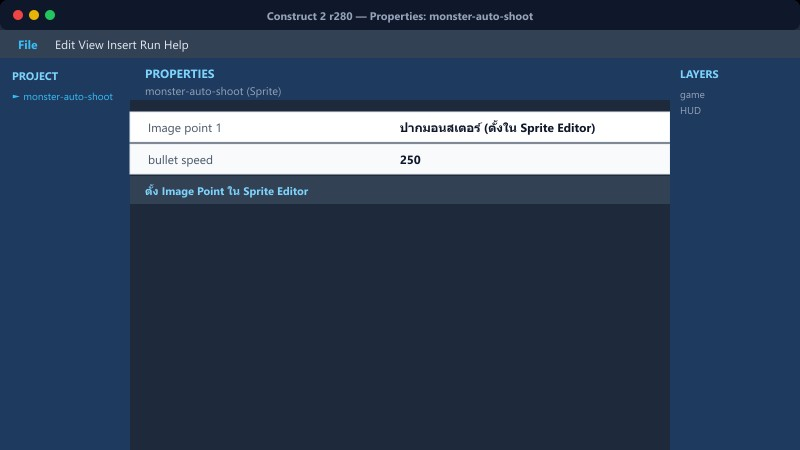
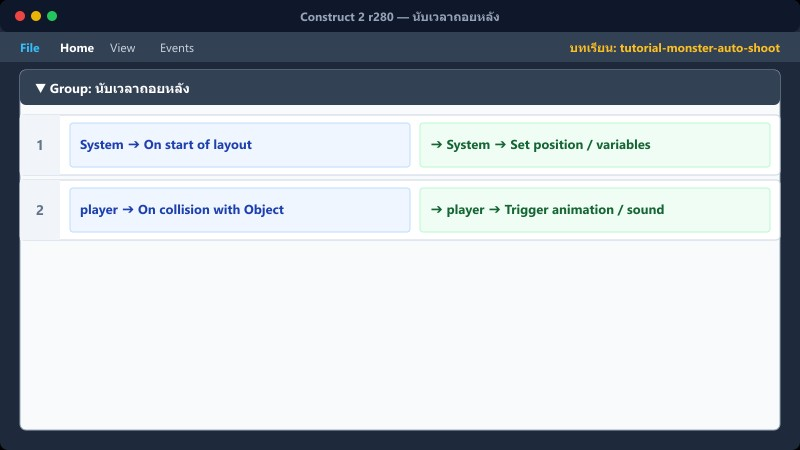
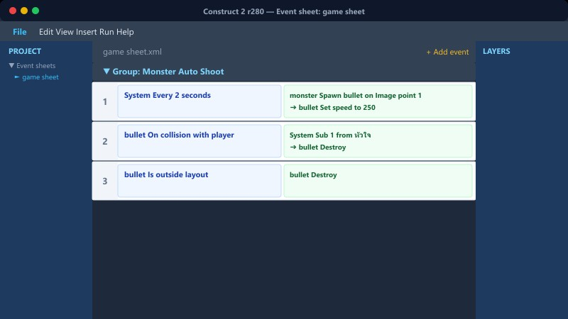

1เตรียมวัตถุกระสุน
สร้าง Sprite ชื่อ emon_bullet และเพิ่ม Behavior ให้มัน
emon_bullet → Behaviors
Add Bullet (ตั้ง Speed: 650, Set angle: Yes)
Add Destroy outside layout
วางกระสุนต้นแบบไวนอกฉาก 1 ตัว และตั้ง Initial visibility เป็น Invisible เสมอ
📍 ที่ไหนใน C2: Object types → Sprite ใหม่
2สร้างจุดปากให้มอนสเตอร์

เปิดหน้าต่างวาดภาพของ eminy เพื่อเพิ่ม Image point
เปิด Image editor ของ eminy
เมนูซ้ายมือ → Set origin and image points
เพิ่ม Image point 1 ไว้ที่ปากของมอนสเตอร์
ต้องกำหนดจุดปากให้ครบทุกเฟรมของ Animation ถ้ามีหลายเฟรม
📍 ที่ไหนใน C2: ดับเบิลคลิกที่ตัว eminy
3เพิ่มตัวแปรเวลายิง

เพิ่ม Instance variable ให้กับ eminy
เวลายิงถัดไป • Number • 0
พร้อมยิง • Number • 0
eminy → On created
Set เวลายิงถัดไป to random(10, 20)
เพื่อให้แต่ละตัวสุ่มเวลายิงนัดแรกไม่พร้อมกัน
📍 ที่ไหนใน C2: Properties ของ eminy
4นับเวลาถอยหลัง

System → Every tick
eminy → Subtract dt from เวลายิงถัดไป
eminy.เวลายิงถัดไป ≤ 0
eminy → Set พร้อมยิง to 1
ใช้ dt ในการลบ เพื่อให้นับถอยหลังเป็นวินาทีจริงๆ
📍 ที่ไหนใน C2: game sheet → กลุ่ม "มอนยิงกระสุนสุ่มองศา"
5ตรวจระยะและยิงจากปากในมุมจำกัด

eminy.พร้อมยิง = 1
System → Compare: distance(eminy.X, eminy.Y, player.X, player.Y) ≤ 1200
System → Create emon_bullet on layer "game" at (eminy.ImagePointX(1), eminy.ImagePointY(1))
emon_bullet → Set angle to clamp(angle(eminy.X, eminy.Y, player.X, player.Y), 150, 210) (ตัวอย่างถ้าหันซ้าย)
ระยะ ≤ 1200 กันการยิงนอกจอ และตั้ง clamp ป้องกันกระสุนยิงย้อนกลับหลังมอนสเตอร์ (มุม ±30 องศา)
📍 ที่ไหนใน C2: game sheet → กลุ่ม "มอนยิงกระสุนสุ่มองศา"
6รีเซ็ตเวลาหลังยิง
ต่อจาก Action ด้านบน
eminy → Set พร้อมยิง to 0
eminy → Set เวลายิงถัดไป to random(10, 20)
Audio → Play "shoot"
สุ่มเวลาการยิงนัดถัดไปอีก 10-20 วินาที
📍 ที่ไหนใน C2: game sheet → กลุ่ม "มอนยิงกระสุนสุ่มองศา"
⚠️ ข้อผิดพลาดที่พบบ่อย

- ลืมใส่ Behavior "Destroy outside layout" ให้กระสุน ทำให้พอยิงไปนานๆ เกมจะค้างเพราะกระสุนค้างในเมมโมรี่
- กำหนด Layer ตอน Create object ผิดชื่อ (ต้องดูตัวพิมพ์เล็ก/ใหญ่ของเลเยอร์ใน Layout)
- ลืมลบระยะห่างด้วย dt (ทำให้กระสุนยิงรัวแบบปืนกลในพริบตา)